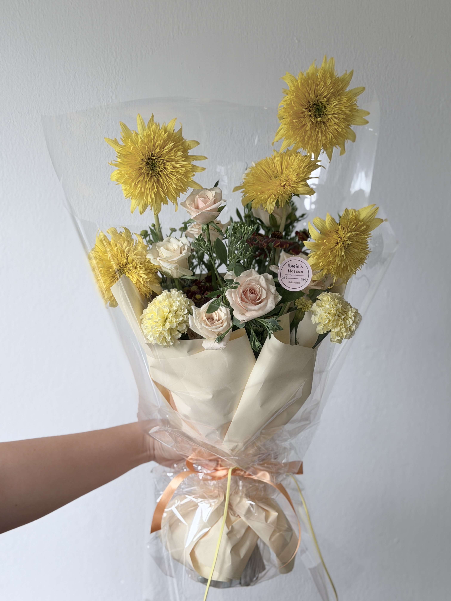
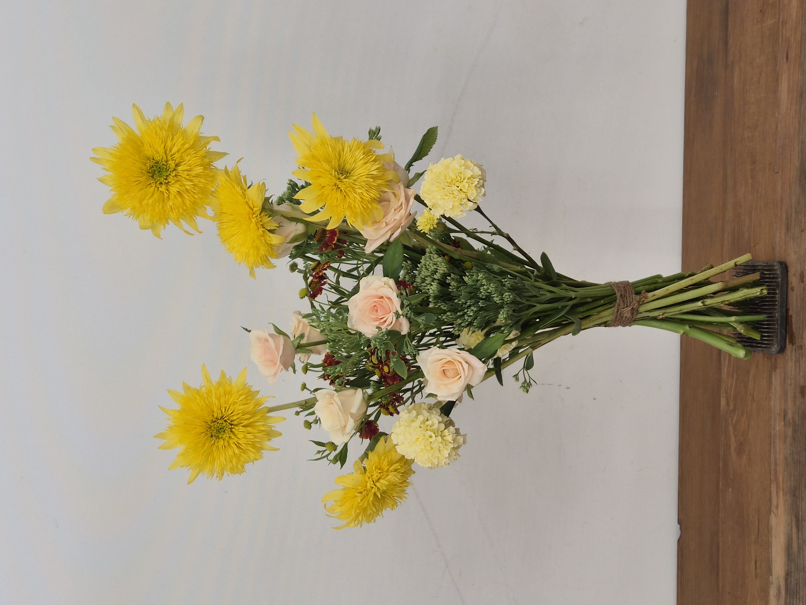

CLASS WORK · HAND-TIED
2026.09.01MASS & FILLER
HAND-TIED BOUQUET
黄色のマスと小花のリズム
02 / CLASS WORK
CONCEPT
MASS, TEXTURE
AND RHYTHM.
크고 선명한 형태의 테디베어 해바라기를 중심으로, 작은 꽃과 그린 소재를 겹쳐 크기와 질감의 대비를 표현한 핸드타이드 부케입니다.
밝은 옐로와 크림 톤을 주조색으로 사용하고, 헬레니움의 짙은 적갈색을 작은 포인트로 더해 따뜻하면서도 생동감 있는 분위기를 만들었습니다.
大きく存在感のあるテディベアヒマワリを中心に、小花やグリーンを重ね、花の大きさと質感のコントラストを表現したハンドタイドブーケです。明るいイエローとクリームを基調に、ヘレニウムの深い赤茶色をアクセントとして加え、あたたかく生き生きとした印象に仕上げました。
COLOR PALETTE
色の構成
YELLOW,
CREAM,
BURGUNDY.
골든 옐로와 버터 크림을 중심으로 페일 피치의 장미를 더해 따뜻한 색조를 만들었습니다. 올리브 그린이 전체를 안정시키고, 헬레니움의 버건디가 작은 포인트로 깊이를 더합니다.
ゴールデンイエローとバタークリームを中心に、淡いピーチのバラを重ねてあたたかな色調にまとめました。オリーブグリーンが全体を安定させ、ヘレニウムのバーガンディが小さなアクセントとして奥行きを加えています。
GOLDEN YELLOW
#D9A90FBUTTER CREAM
#E9DDAEPALE PEACH
#E5C7B6OLIVE GREEN
#687252BURGUNDY
#71392FMATERIALS
使用花材
풍성하고 둥근 테디베어 해바라기를 중심 소재로 사용하고, 메리골드와 장미로 부드러운 볼륨을 더했습니다. 헬레니움과 불로초처럼 작은 꽃이 모여 있는 소재를 사이사이에 배치해 큰 꽃 사이의 공간을 연결하고 다양한 질감을 만들었습니다.
丸くボリュームのあるテディベアヒマワリを主役に、マリーゴールドとバラでやわらかなボリュームを加えました。ヘレニウムやベンケイソウのような細かな花材を間に配置し、大きな花の間をつなぎながら質感の変化をつくっています。
테디베어 해바라기
テディベアヒマワリ
메리골드
マリーゴールド
아미 장미
バラ ‘アミ’
헬레니움
ヘレニウム
불로초
ベンケイソウ（セダム）
GOLDEN YELLOW · CREAM
PEACH · OLIVE · BURGUNDY
ゴールデンイエローとクリームに、
ピーチ、オリーブ、赤茶色を重ねた配色。
COMPOSITION
構成とバランス
MASS,
FILLER,
RHYTHM.
크기가 큰 테디베어 해바라기를 서로 다른 높이에 배치해 강한 매스와 시각적인 리듬을 만들었습니다.
아래쪽에는 메리골드와 장미, 불로초를 모아 중심의 밀도를 높이고, 헬레니움의 작은 꽃을 사이에 반복해 큰 꽃과 작은 꽃이 자연스럽게 연결되도록 구성했습니다.
꽃의 높이를 일정하게 맞추기보다 위아래로 차이를 두어 전체 실루엣이 세로 방향으로 가볍게 확장되도록 했습니다.
大きなテディベアヒマワリを異なる高さに配置し、強いマスと視覚的なリズムをつくりました。下部にはマリーゴールドやバラ、ベンケイソウを集めて密度を持たせ、ヘレニウムの小花を繰り返し配置することで、大きな花と小さな花を自然につないでいます。花の高さをそろえすぎず高低差をつけることで、シルエットが軽やかに広がるよう意識しました。
FINAL VIEW
完成したかたち

포장 전 모습에서는 큰 해바라기가 만드는 높이와 작은 소재가 채우는 공간이 더욱 분명하게 드러납니다. 강한 형태를 가진 꽃을 반복하면서도 동일한 높이에 놓지 않아 세로 방향으로 자연스러운 움직임과 리듬이 생겼습니다.
ラッピング前の姿では、大きなヒマワリがつくる高さと、小さな花材が埋める空間の関係がより明確に見えます。存在感のある花を繰り返しながらも高さをそろえず配置することで、縦方向に自然な動きとリズムが生まれています。
REFLECTION
制作を振り返って
WEIGHT,
SPACE,
FLOW.
큰 꽃과 작은 꽃을 함께 사용할 때 각 소재가 차지하는 시각적인 무게가 어떻게 달라지는지 경험한 작업입니다. 테디베어 해바라기의 크고 강한 형태를 중심으로 높이를 달리 배치하면서, 한 종류의 주 소재만으로도 리듬을 만들 수 있다는 점을 확인했습니다.
작은 꽃은 빈 공간을 단순히 채우기보다 큰 꽃 사이의 흐름을 연결하는 역할을 한다는 점도 배울 수 있었습니다. 다음 작업에서는 큰 꽃의 방향과 간격을 조금 더 세밀하게 조절해 전체 실루엣 안에서 시선이 더욱 자연스럽게 이동하도록 구성해보고자 합니다.
大きな花と小さな花を組み合わせたとき、それぞれが持つ視覚的な重さの違いを学んだ作品です。存在感のあるテディベアヒマワリに高低差をつけて配置することで、同じ主花を繰り返すだけでもリズムをつくれることを確認しました。また、小花は単に隙間を埋めるのではなく、大きな花同士の流れをつなぐ役割を持つことも学びました。
큰 꽃의 방향과 간격을 조절해 매스 사이의 흐름을 자연스럽게 연결하기